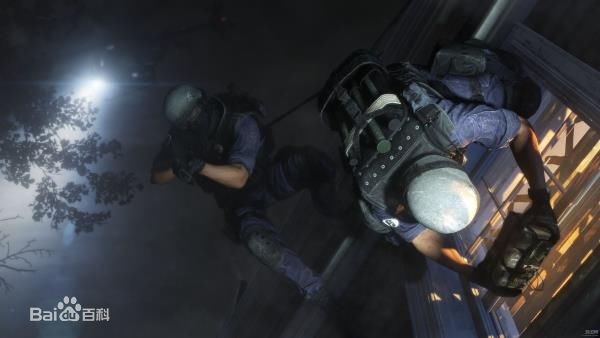

围攻
育碧多年制作与延期的《彩虹六号：爱国者》终于正式焕然一新，改名为《彩虹六号：围攻》与经典警匪多彩虹六号围攻人合作游戏《SWAT》如出一辙，玩家扮演反恐组织进行一场反恐演习，反恐组织分为2队，进攻方和防守方，演示里我们操控的防守方，5v5，情节异常紧张，每个举动都影响人质是否能安全被救出，看来育碧已经把“爱国者”的设定完全抛弃了，如果你喜欢SWAT，那么这款游戏就是你的最爱。
这是一场多人游戏的演示，玩家分成了两队，一队模拟绑架了某个可怜的女士，另一边的特警利用迷你摄像头侦察清楚了情况，开始了营救。本来都解决了防守队员，救出了女士，但却遭到了伏击。
游戏全程都有语音交流，非常注重团队合作以及指挥，不像COD那样的横冲直撞。游戏的画面不算是顶级，但是破坏效果很出彩。
本作正式名称为《彩虹六号：围攻（Rainbow Six：Siege)》，游戏将登陆Xbox One，PS4与PC平台，发售日2015年12月2日。
